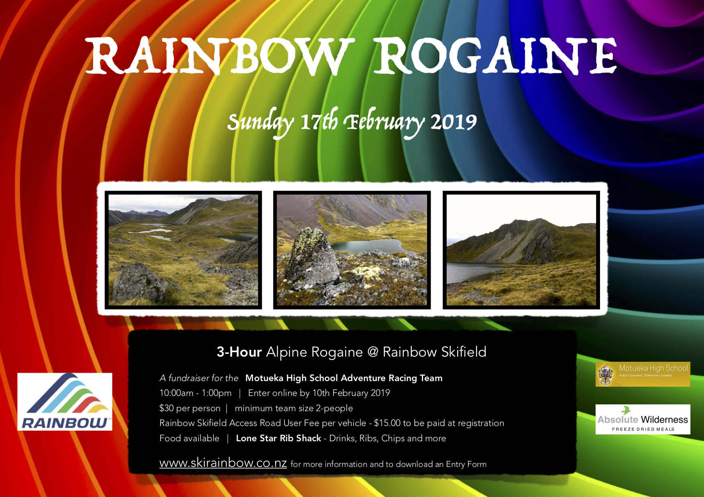

| Calendar of Events in 2019 | |
| | |
| Wednesdays 16, 23 & 30 January Duration: 1 & 2 hour Location: Horotane Valley, Huntsbury Hill & Mt Vernon |
Canterbury Summer Rogaine Series Anybody that has a moderate level of fitness can participate. A high level of navigation ability is not required. Teams travel at their own pace and anyone from children to grandparents can experience the personal satisfaction that comes from cross-country navigation at their own level of competition and comfort. Team members stay within earshot of each other. See Canterbury Rogaine Series. |
| Wednesday 6th February Duration: 1 & 2 hour Location: Corsair Bar, Lyttleton Harbour |
Further Faster Waitangi Day Rogaine Something Different Come along for a kayak/paddle board/swim/foot Rogaine in Corsair Bay. Do one or all disciplines for one or two hours from 10am to 12pm followed by a BBQ and spot prizes. See Canterbury Rogaine Series or Facebook. |
| Saturday 16th February Duration: 6 & 3hrs with a 90 min family option Location: Mount Misery Rd, Herbert 9495, North Otago |
Glencoe Run Hampden School in partnership with New Zealand Rogaine Association is excited to invite you to participate in the inaugural Glencoe Run Rogaine Challenge. There is a 6-hour and 3 hour event for Rogainer's along with a 90 minute minigaine fun event for families. We are hoping to attract locals as well as teams from further a field. This is a fundraiser for Hampden school and we are very Grateful for Grant and Ele Ludemann's generosity in allowing us to hold the event on their property as well as Port Blakely for opening up part of the Hebert forest to us. See Hampden School Glencoe Run on facebook for details. |
| Sunday 17th February Duration: 3hrs Location: Flagstaff-Nicols Creek, Dunedin |
Dunedin Rogaine Events - Glow Worms Rogaine Following on from the successful events in 2017 & 2018, this year the "Glow Worms Rogaine" will be the first event in a Dunedin 5-part rogaine series. 5 months, 5 rogaines. See Glow Worms Rogaine on facebook for details. |
| Sunday 17th February Duration: 3hrs Location: Rainbow Skifield, Nelson |
 Rainbow RogaineA fundraiser for the Motueka High School Adventure Racing team. See skirainbow.co.nz for details. |
| Saturday 23rd February Duration: 6 & 3hrs Location: Ashley Gorge |
Ashley Gorge Rogaine This rogaine is being organised as a collaborative effort between two fundraising groups - one fundraising to take a group of school students on an orienteering trip in Europe and the other for an Oxford Area School Japanese cultural trip. The Rogaine will take in hilly farm land, tussock land and areas of bush in the foot hills close to Ashley Gorge. The area is not commonly visited for rogaines. Make a weekend of it and take the family camping at the holiday park. Watch Ashley Gorge Rogaine for details. |
| Wednesdays 13, 20, 27 February 6, 13, 20 March Duration: 2 hours |
Taranaki Summer Rogaine Series Teams of 2-5 people navigate around the city using an accurate map to find controls. Each control is worth a different point value. The trick is that you must work out the best route for your team to collect the most points. But don't be late back because you will loose points. See Orienteering Taranaki for more details. |
| Sunday 10th March Duration: 6, 4 & 2 hour with Family options Location: Christchurch Adventure Park, Christchurch |
Wicked 10th Anniversary Rogaine Celebrating 10 years of Wicked Rogaines exploring the Port Hills of Christchurch. Participants will explore the park and its surroundings. Entry includes FREE lift pass during the event. Families are welcome. If you are not sure ask Nora or Ian. More details as the time gets closer. Check out Wicked Rogaines for more details or on facebook. |
| Monday 25th March (Otago anniversary day) Duration: 3hrs Location: Pukerangi, Dunedin |
Dunedin Rogaine Events - Event 2 Part of the Dunedin 5-part rogaine series. 5 months, 5 rogaines. Come along and have fun, improve your navigation, and run on some new terrain. The five events will all be quite different, which means more opportunities to improve your rogaine skills! Events 1, 4, and 5 use relatively simple, rogaine-specific maps. Events 2 and 3 will use more complicated maps (proper orienteering maps). Some coaching before these events to help people with map symbols and navigational skills will be offered. See Dunedin Rogaine Events on facebook for details. |
| Sunday 31st March Duration: 3 & 6 hour Location: South Canterbury foothills near Woodbury |
Geraldine Rogaine Autumn Muster (GRAM) 2019 GRAM 2019 is back on home-ground, on gentler country in the Waihi River catchment near Woodbury (South Canterbury). There will be electronic punching (Navlight) for faster and more accurate results. Two events (3-hour and 6-hour) will provide accessible country for novices and testing terrain for the experienced. Great scenery and spectacular views. And of course the legendary post-event food at Woodbury Hall. More details closer to the date at gram.org.nz. |
| Wednesdays 20th/27th March & 3rd/10th April Duration: 1 & 2 hour Location: Christchurch |
Wicked Rogaines Autumn Series These events are always popular. Try to pre-enter if you can and you will be guaranteed a course that will suit your ability and you will return with a smile beaming on your face. Families are welcome. If you are not sure ask Nora or Ian. Check out Wicked Rogaines for more details or on facebook. |
| Saturday 6th April Duration: 3hrs or 90 minutes Location: Twilight on Signal Hill |
Dunedin Rogaine Events - Event 3 Part of the Dunedin 5-part rogaine series. 5 months, 5 rogaines. Come along and have fun, improve your navigation, and run on some new terrain. The five events will all be quite different, which means more opportunities to improve your rogaine skills! Events 1, 4, and 5 use relatively simple, rogaine-specific maps. Events 2 and 3 will use more complicated maps (proper orienteering maps). Some coaching before these events to help people with map symbols and navigational skills will be offered. See Dunedin Rogaine Events on facebook for details. |
| Sunday 14th April Duration: 90 minutes Location: McLeans Island MTB Park |
McLeans Island Rogaine A fundraiser for Rolleston Christian School junior playground. MTB or foot option rogaine, suitable for all ages and experience levels Registration and maps from 12 pm briefing 1 pm. Rolling start from 1:05 pm until 1:30 pm We will be using the NavLight control system. Online entries are now open: entero.co.nz/evento.php?eventName=MIR-2019. Entries will be available on the day but to guarantee a map and save yourself the $5 late entry fee please get in early and pre-enter. For any updates on the event check out: www.facebook.com/events/2385239364820617 |
| Saturday 4th May Duration: 2hrs Location: Port Chalmers, Dunedin |
Dunedin Rogaine Events - Event 4 Part of the Dunedin 5-part rogaine series. 5 months, 5 rogaines. Come along and have fun, improve your navigation, and run on some new terrain. The five events will all be quite different, which means more opportunities to improve your rogaine skills! Events 1, 4, and 5 use relatively simple, rogaine-specific maps. Events 2 and 3 will use more complicated maps (proper orienteering maps). Some coaching before these events to help people with map symbols and navigational skills will be offered. See Dunedin Rogaine Events on facebook for details. |
| Saturday 11th May Duration: 12, 6 & 3hrs Location: Poolburn |
Highland Events Autumn Rogaine The same sort of country as the last Poolburn Event. About 5K north of the last event. Once again awesome country. Already excited about setting the course. The course is on typical Central Otago high country, rocky outcrops, gold mining relics, large open ridges incised with small to large gullies. Mainly ground level vegetation, some denser vegetation in the gullies. Elevation ranges from 500m to 1200m. Go to highlandevents.co.nz. |
| Saturday/Sunday 18th/19th May Duration: 24hrs Location: Kept secret until closer to the event |
TWALK None of this silly sleeping business. Come dressed up and prepared for an adventure. Take the bus from Canterbury University to the secret location and then you and your team are off. TWALK is a twenty-four hour orienteering event. It is split into five legs, each around 15-20 kilometres long. Each leg has around 10 - 20 controls, which will be hidden on features marked on a map and described by a cryptic clue. You will be given an event map at the beginning of leg one and a list of cryptic clues. The first leg is compulsory, as it leads from where you are dropped off to the Hash House. From there, competitors may choose to participate in as many or few legs as they choose, leaving when they like (there is a compulsory 30 minute break between legs). Legs two = five form loops which end up back at the Hash House, and can be cut short if required. Go to twalk.nz. Registration open now! Get in quick. |
| Sunday 19th May Duration: 90mins & 3hrs Location: Kapiti Coast |
NOT the City Safari While we wait for the public transport to settle down Michael Wood has in mind a MTB rogaine on the Kapiti Coast. Will be suitable for feet as well as wheels. See Orienteering NZ - Rogaine for details as they become available. |
| Sundays 5th & 19th May 9th Jun Duration: 90 minutes Location: North West Auckland |
Auckland Rogaine Series 2019 Suitable for all levels from beginners to experienced rogainers. Coaching for new comers before the start of each event, high quality maps in scenic locations, prize giving and spot prizes after each event. Website has all the details, how to enter, locations etc rogaineseries.co.nz |
| Sunday 26th May Duration: 3hrs Location: somewhere in the Marlborough region |
Malborough Muster Rogaine MOCs annual 3 hour rogaine held somewhere in the Marlborough region. Suitable for families, novices and the more experienced adventurers out there. You can walk, jog or run. Overall mostly easy controls with some harder ones that good navigators will get onto quickly while others may take a little longer. More details to come soon on entry, fees, location etc. The club will have a BBQ (burger and drink) inclusive of the entry fee. Go to marlborough-muster-rogaine for details as they become available. |
| Sunday 26th May Duration: 90 minutes Location: Port Waikato |
Port Waikato Rogaine See Orienteering NZ Rogaine Events for more details |
| Wednesdays 29th May & 5th/12th June then 14th, 21st & 28th August Duration: 1 & 2 hour Location: Christchurch |
Wicked Rogaines Winter Night Series These events are always popular. Try to pre-enter if you can and you will be guaranteed a course that will suit your ability and you will return with a smile beaming on your face. Families are welcome. If you are not sure ask Nora or Ian. Check out Wicked Rogaines for more details or on facebook. |
| Saturday 8th June Duration: 2hrs Location: Mosgiel Madness, Dunedin |
Dunedin Rogaine Events - Event 5 Part of the Dunedin 5-part rogaine series. 5 months, 5 rogaines. Come along and have fun, improve your navigation, and run on some new terrain. The five events will all be quite different, which means more opportunities to improve your rogaine skills! Events 1, 4, and 5 use relatively simple, rogaine-specific maps. Events 2 and 3 will use more complicated maps (proper orienteering maps). Some coaching before these events to help people with map symbols and navigational skills will be offered. See Dunedin Rogaine Events on facebook for details. |
| Saturday 15th June Duration: 6 & 12hrs Location: Broomfield (near Amberley) North Canterbury |
Heights of Winter 2019 This event should be on the bucket list for every rogainer. It is always guaranteed to be in an area that will have something for everyone. Even if you have only ever competed in a two hour event, this event is for you. Go at your own pace, have lots of rests and come back when you feel like it. You will find that six or even twelve hours come up very quickly. Further details will be available on www.rogaine.org.nz as they become available |
| Saturday 15th June Duration: 60 minutes Location: Redwoods Visitor Centre, Longmile Road, Rotorua |
Mid Winter O Come along and join us for a "freaky" evening navigation adventure in the Redwoods! Bonus points for completing a "scary" mystery activity. You will need to bring a torch or head lamp. Fancy dress is encouraged, but not essential. There will be some prizes for the best fancy dress outfits. See Orienteering NZ Rogaine Events for more details |
| 25 May, 9 Jun, 30 Jun Duration: 1hrs Location: Rotorua |
OBOP Rogaine Series 2019 See Orienteering NZ Rogaine Events for more details |
| Sunday 7th July Duration: 6, 3 & 1.5hrs Location: near Amuri North Canterbury |
Amuri Basin 2019 Following the last two successful years the Amuri Basin Rogaine is back. This year will be another different location but with the same friendly people and atmosphere. More details to follow and check Amuri Basin Rogaine on Facebook. |
| Saturday 13th July Duration: 6 & 3hrs Location: Blenheim, Marlborough region |
NZ Secondary Schools Champs This event has students Yrs 7/8 (non-Champs class) and Yrs 9 - 11 competing in the 3-hour event only. Yrs 12/13 can compete in either the 3 or 6-hour event. There will be a public event held in conjunction with the NZ Schools event with 3 or 6 hours options open to all ages and abilities. For all the details see www.moc.kiwi.nz/rogaine |
| Saturday 20th July Duration: 3hrs Location: Snow Farm, Wanaka |
Snow-gaine Based at the Snow Farm Lodge. 10am 6hr start. 11am 3hr start. map hand out 1hr prior. Registration table open from 8.30am Registration fee includes field pass. If you are a seasons pass holder please email us and we will give you a discount code. Entry fee does NOT include the cost of hiring skis or snow shoes. You can book them in the registration process but you will pay for them directly to the Snow Farm on the day. Course will include some Snow farm trails plus lots of 'off piest' country. You will need to know how to read a map! If it's cloudy you'll need to know how to use a compass as well. (Instruction given prior to start). See highlandevents.co.nz. |
| Saturday 27th July Duration: 6 & 3hrs Location: Whakarewarewa Forest, Rotorua |
Great Forest Rogaine This annual event has 3 and 6 hour Foot and MTB rogaine options. This year we are offering an e-bike category for the MTB. Get together a team for a great adventure exploring in Whakarewarewa Forest, Rotorua. This event is great adventure race training. You can go as easy or as hard as you like, visiting as many controls as you can in the time allowed. For all the info and to enter check out www.obop.org.nz. Complimentary pizza afterwards is included in your entry fee. This year we will also make a donation for every entry to the Rotorua Trails Trust and the Rotorua MTB Club First Response Unit. |
| July 27/28th Duration: 24 hrs Location: La Molina. Pirineus Catalunya, Spain |
16th World Rogaine Championships The competition area is close to the Cadí-Moixeró National Park and it is a beautiful mixed of clean forest and high mountains. Terrain is from moderate hilly to mountainous. The highest peak is La Tossa 2536m and the lowest area is around 1300m, around Alp village. This mountainous environment provides a physically challenging terrain where minimized climbs and drops will be an important factor. Therefore, navigational capabilities and route planning skills acquire a vital importance and have been proven as an essential factor for the successful rogainer. However is not a big area (less than 150 qm2) the difference in altitude will be a relevant factor. See WRC2019. |
| Sunday 4th August Duration: 3 hours Location: Christchurch |
Christchurch Youth Council Amazing Race/Urban Rogaine The CHCH Youth Council are organizing a fun Amazing Race/Urban rogaine event around central Christchurch on Sunday 4th August. Starting from the Youth Space (corner of Manchester and Lichfield St) your team will have three hours to collect as many controls as possible in usual score-orienteering/rogaine style. However some of the checkpoints will also have a bonus mystery challenge to complete for extra points! Entries are now open. All ages welcome, particularly youth and families. Website |
| Sunday 4th August Duration: 6, 4 & 2 hrs with Kids event options Location: Little River, Bank's Peninsula |
Little River 6 hr Wicked Rogaine Last year's event was the biggest rogaine in NZ in terms of numbers. And the people who turned up weren't disappointed. This area offers everything that a rogaine should have. Rolling hills, some steep. Areas of native forest and some of plantation. Creeks with impressive waterfalls. Don't miss out. Families are welcome. If you are not sure ask Nora or Ian. Check out Wicked Rogaines for more details or on facebook. |
| Wednesdays 14th/21th/28th August Duration: 1 & 2 hour Location: Christchurch |
Wicked Rogaines Night Series These events are always popular. Try to pre-enter if you can and you will be guaranteed a course that will suit your ability and you will return with a smile beaming on your face. Families are welcome. If you are not sure ask Nora or Ian. Check out Wicked Rogaines for more details or on facebook. |
| Saturday 17th August Duration: 3 hr Location: Alexandra |
Flat Top Hill Rogaine Organised by Central Otago Orienteering See Facebook for further information |
| Sunday 25th August Duration: 4 & 2 hr and Family event Location: Mount Burke, Wanaka |
Mount Burke Wanaka Wicked Rogaine With the generous permission of land-owner Tim Burdon, rogainers will scour the stunning Wanaka lake-front and the surrounding hills for as many checkpoints as they can find in the time allowed. See Mount Burke Rogaine for further information |
| Saturday 14th September Duration: 12, 6 & 3hrs Location: Tarras |
Highland Events Spring Rogaine The team at Highland Events have been putting on quality rogaines for many years now and they have access to what can arguably be described as the best rogaining country in NZ. These events are well worth the travel from whatever part of the country you come from. Go to highlandevents.co.nz/events for information as it becomes available. |
| Tuesdays 3rd, 10th, 17th & 24th Sept Duration: 1 hour Location: Sandringham, Epsom, St Heliers, Epsom |
Spring Night Series The Night Street Series are four low key and easy navigation events using maps that look at little like street maps (with no street names). You choose to visit any 6, 10, 14 or 18 controls and plan to finish in approximately 1 hour. 6 controls can be visited within an hour if you are walking, 18 controls will need a fast run! We will have a cup of soup ready for you on your return. Don't forget to bring a good torch or headlamp. See Orienteering NZ Rogaine calendar for more details. |
| Wednesdays 11th, 18th & 25th Sept Duration: 1 hour Location: Victoria Park, Bottle Lake, Halswell Quarry |
Night Nav'19 NIGHT NAV has been running since the turn of the century and has returned for another year! Competitors have one hour to walk, run or mountain bike through the forest collecting checkpoints, which are shown on the map handed out just before the start. Runners and walkers can cut across the forest, through the sand dunes, whereas the mountain bikers will navigate their way through the track networks to find the controls. You can compete in teams or individual, its a great social adventure. Get some friends together and give it a go! Watch nightnav.org for more details. MTBO option at Bottle Lake. |
| Saturday 12th October Duration: 3 & 6 hrs Location: Heathcote Valley, Christchurch |
Port Hills Spring Rogaine Jenni and Carsten bring you another Port Hills Rogaine. This is in the back yard for Christchurch residents. Put the date in your calendar and don't miss out. These are quality events that showcase the Port Hills playground. Watch Spring Rogaine for further information as it becomes available. |
| Sunday October 13th Duration: 3 hours Location: Seatoun Park, Hector Street, Seatoun, Wellington |
Spring Classic - 33rd Anniversary Come and Explore a New Map on the Wild, Beautiful Wellington coastline in places you never knew existed. Run or walk on areas with incredible vistas, with native bush, pines and coastal parks. Courses suitable for beginners to experts. Bring the kids, adventure with friends or compete with the best. The ultimate adventure where the mind wars with the body, where the physical competes with the mental and where there is plenty of soul. This year promises to be another cracker. See Winter Classic |
| Sundays 29th Sep, 13th Oct, 3rd Nov Duration: 90 mins Location: Rotorua |
Mountain bike Rogaine series 90 Minute Rogaine - Get as many checkpoints as you want or can in 90 minutes. Awesome singletrack and forestry roads of the Whakarewarewa forest "inner-core" track network and surrounds. Kid, beginner, family and pro friendly. Your typical low key but quality OBOP club event. Go to Orienteering Bay of Plenty for information as it becomes available. |
| Saturday November 2nd Duration: 6 & 3 hours with 90min family option Location: near Hampden, North Otago |
|
| Saturday November 2nd Duration: 6 & 3 hours with 90min family option Location: north Dunedin |
Alhambra Antics/ Town and Around Based at the Opoho Scout Hall this is mainly on streets, roads, paths with numerous loops and twists. More details to follow. |
| Wednesdays 23rd, 30th Oct & 6th Nov Duration: 1 & 2 hour Location: Christchurch |
Wicked Rogaines Spring Series These events are always popular. Try to pre-enter if you can and you will be guaranteed a course that will suit your ability and you will return with a smile beaming on your face. Families are welcome. If you are not sure ask Nora or Ian. Check out Wicked Rogaines for more details or on facebook. |
| November 9/10th Duration: 24 hour Location: Tasmania, Australia |
Australasian Rogaining Champs Rogaining Tasmania is excited to announce that the venue for the 2019 Australasian Rogaining Championships is St Helens, Tasmania. The event will be held on the weekend of 9 - 10 November, 2019. This fantastic rogaining area has terrain ranging from steep areas with extensive granite outcropping to flatter, more subtle terrain that was historically utilised for tin mining. The map includes the sleepy coastal township of Binalong Bay and the world famous "Bay of Fires" area, a mecca for travellers who love the outdoors. See Binalong Day and Night for more information. |
| Saturday November 16th Duration: 3 & 6 hour Location: Kaiwarua Station behind the Hunter Hills in Waimate |
Waimate School Rogaine This is great country for a rogaine and a new area that has not been explored before by rogainers. With the Friday being Canterbury Anniversary day, this is an ideal opportunity to make a long weekend of it. Download and display this flyer Waimate Rogaine 2019 or fill out this form to Enter Here |
| 15 May, 18 Jun, 9 Jul, 15 Aug, 12 Sep, 14 Oct, 20 Nov Duration: 90mins & 3hrs Location: Around Wellington |
Hutt Valley Afterwork Rogaine Series 2019 Something to look forward to each month, the afterwork navigation league has a reputation for well run fun events. Every one is welcome. Just mention at registration that you are new and people will queue up to help you. See mapsport.co.nz/wellyrog for more details |
| November 23rd & 24th Duration: 24 hour with 3 & 6h options Location: Orangapai, east of Waipiata |
Rab NZ Rogaine Champs The course is on typical Central Otago high country, rocky outcrops, gold mining relics, large open ridges incised with small to large gullies. Mainly ground level vegetation, some denser vegetation in the gullies. Elevation is 600m in the North of the course going out to 1200m in the South. Don't let the word Championship put you off we have a very user friendly course suitable for all levels. Along side the Champs we will be running 3hr and 6hr events for the slightly less adventurous. Don't be scared to give the 24hr Champs a crack. It seems intimidating but its not. You can stay in the field as long as you like, rest as long as you like and eat as much as you like at the hash-house on the course. Check out Rab NZ Rogaine Championships |
| Every Wednesday from Oct 9th to Dec 11th Duration: 45 minutes Location: various locations around Hamilton |
Urban Rogaine Series 45min Urban Rogaine using GPS Technology on your phone. Visit as many checkpoints as you can in the time available. Some are worth more than others so make sure you choose the best ones to visit! There is a mystery activity during the event which is worth plenty of points. Don't be late back as you will lose points! For details and locations check out Orienteering Waikato or Orienteering NZ Calendar. |
| Every Wednesday from Nov 6th to Dec 11th Duration: 2 hours Location: various locations around New Plymouth |
Taranaki Spring Rogaine Series Navigate using an accurate map, finding landmarks and controls. Points are allocated to each control. Collect as many points as possible within time limit. Penalty points apply for late return. For details and locations check out Orienteering Taranaki or Orienteering NZ Calendar. |
| Wednesday 11th December Duration: 1.5 & 2.5 hrs Location: Heathcote Valley |
Christmas Twilight Rogaine Ho! Ho! Ho! Celebrate the impending season with an evening of fun and will get to visit some rarely used areas of the Port Hills. Further Details to follow. |
| Sunday 15th December Duration: 6, 4 & 2 hour with Family options Location: TBA |
Wicked Rogaines Christmas Rogaine What better way to get ready for the festive season? If you have been completing the Wednesday night series or if you go for walks in the weekend, extend yourself. You just go with your friends at your pace and you are guaranteed to visit places you haven't been to before and importantly have fun. Families are welcome. If you are not sure ask Nora or Ian. More details as the time gets closer. Check out Wicked Rogaines for more details or on facebook. |
| | |